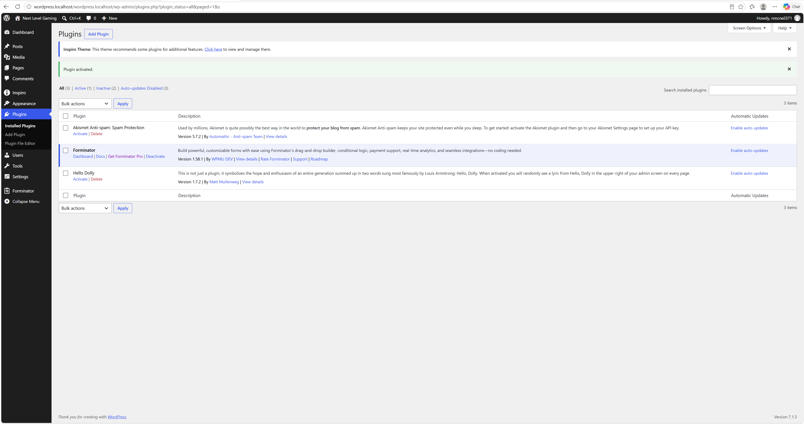
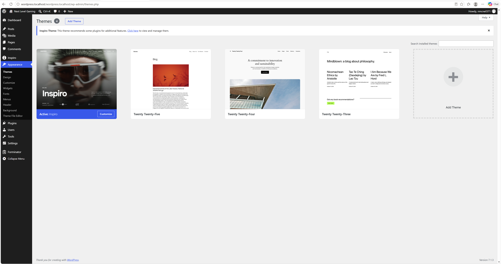

Naquan McNeil
October 13, 2026
I chose the Inspiro theme because I liked its design for my gaming website, Next Level Gaming. It changed the appearance of my site, including the header and layout. I explored its customization options and changed the site title. I also installed and activated Forminator because it adds tools for creating contact forms. This extends my site by giving me a way to build forms for visitors to share gaming questions or feedback.

